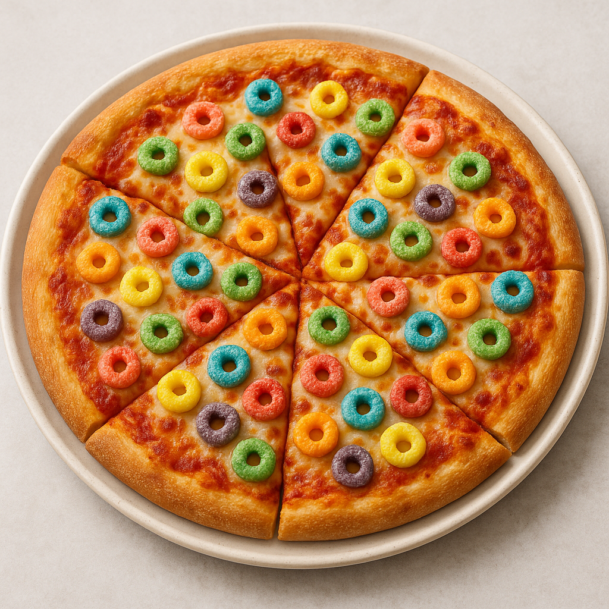

Fruit Loop Pizza

A fun and colorful treat, combining sweet and savory chaos. This dazzling monstrosity blends gooey mozzarella with bright, fruity cereal atop a classic pizza crust—because why not?
Ingredients
- 1 lb pizza dough
- 1/2 cup claassic pizza sauce (yes, tomato)
- 2 cups shredded mozzarella cheese
- 1 1/2 cups Froot Loops cereal
- 2 1/2 cups water
- Optional: Drizzle of sweetened condensed milk for that dessert pizza flair
Directions
-
Preheat your oven to 475°F (or hotter if you’re feeling adventurous).
-
Roll out your pizza dough into a 12-inch circle, whispering apologies to Italy as you do.
-
Spread pizza sauce evenly across the dough, then sprinkle with mozzarella.
-
Gently scatter Froot Loops across the top like edible confetti.
-
Bake for 10–12 minutes until the crust is golden, cheese is melted, and the cereal looks slightly toasted but not sad.
-
Optional: Finish with a zigzag of sweetened condensed milk for maximum chaos.
-
Slice, serve, and try not to question your life choices.
Back to Homepage